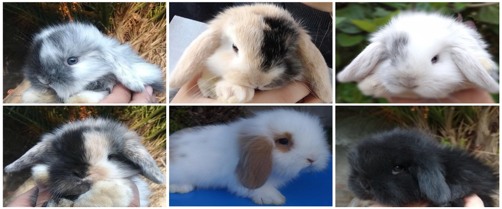
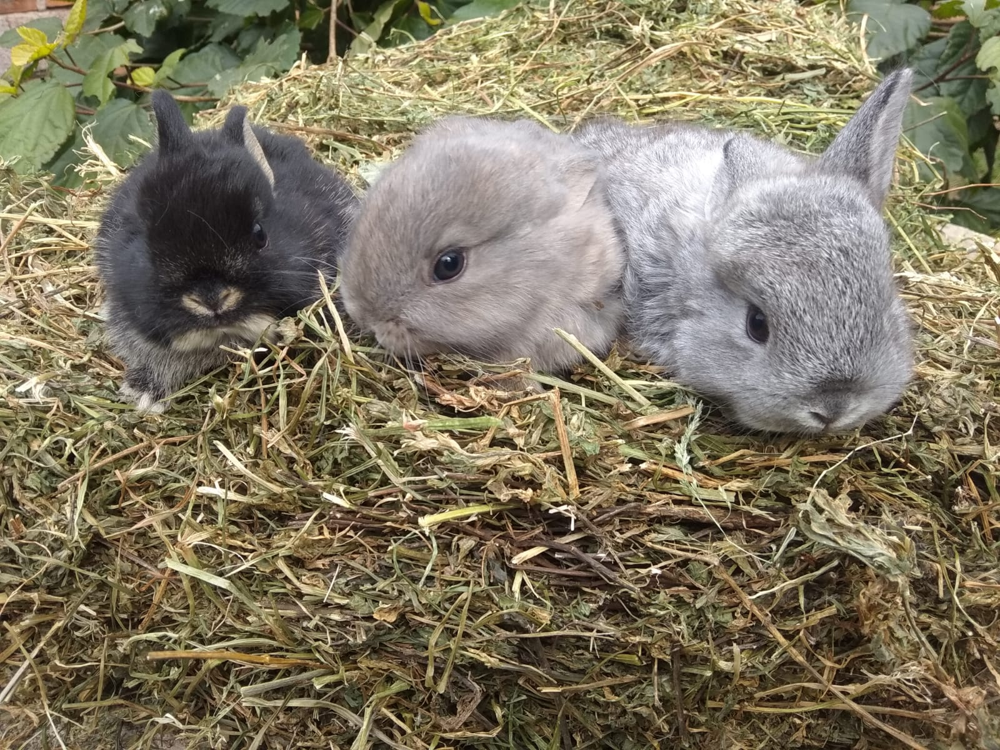
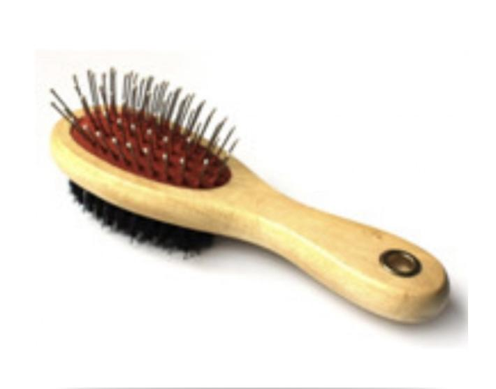
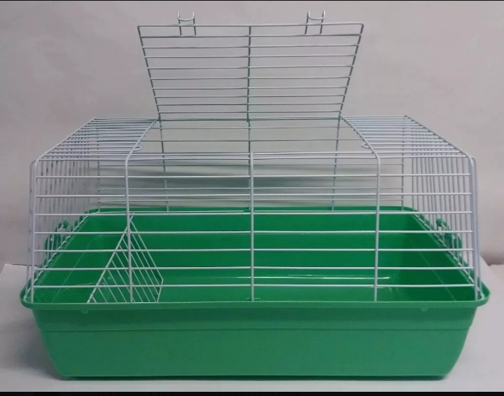
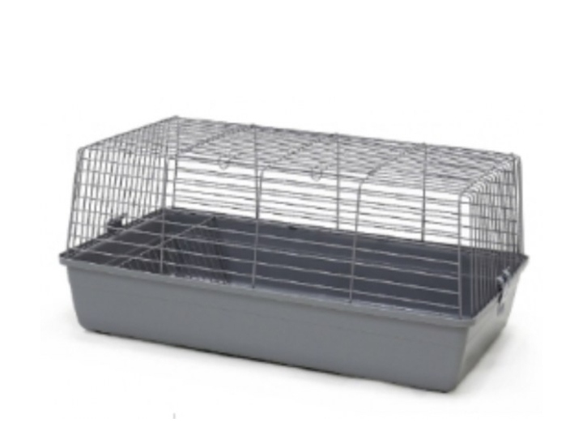

Conejos Disponibles
Conejos de raza que se encuentran a la venta

Conejos de raza que se encuentran a la venta

La raza de conejos más pequeña del mundo, su peso de adulto es de alrededor de 1kg. Se caracteriza por su pequeño tamaño, pelo y orejas cortas, ojos grandes, cuerpo compacto y carácter despierto. Es la raza de conejos enanos más popular en
todo el mundo.
Si estas interesado/a en este conejo, toca el boton que te va a re-dirigir a las diferentes formas de contacto.

Con sus orejas caídas y su mirada tierna, los conejos holland lop son cada vez más elegidos como mascotas en todo el mundo. Además tienen un temperamento tranquilo, se llevan bien con niños y otras mascotas, y son de pequeño tamaño.
Si estas
interesado/a en este conejo, toca el boton que te va a re-dirigir a las diferentes formas de contacto.

El conejo Leon Lop se diferencia muy bien de los demás por su característico pelo largo y bufado en la cabeza. ¡Por eso se llaman así!.
Si estas interesado/a en este conejo, toca el boton que te va a re-dirigir a las diferentes formas de
contacto.
Accesorios para conejos que se encuentran a la venta

Si estas interesado/a en este bebedero, toca el boton que te va a re-dirigir a las diferentes formas de contacto.

Si estas interesado/a en este bebedero, toca el boton que te va a re-dirigir a las diferentes formas de contacto.

Cepillo doble, natural y metálico Dos en uno, desenredar el pelo y acabar con un cepillado suave, el mango de madera es muy estético,tiene unas clavijas con punta redondeada para no dañar la piel.
Si estas interesado/a en este cepillo, toca
el boton que te va a re-dirigir a las diferentes formas de contacto.

Arnés para conejo con correa ajustable.
Si estas interesado/a en este arnes con correa, toca el boton que te va a re-dirigir a las diferentes formas de contacto.

Incluye: Conejo, transportadora, heno, ración, ración premium, bebedero y viruta.
Si estas interesado/a en esta transportadora, toca el boton que te va a re-dirigir a las diferentes formas de contacto.

Incluye: Conejo, jaula, bebedero, ración premium, heno y aserrin.
Si estas interesado/a en esta transportadora, toca el boton que te va a re-dirigir a las diferentes formas de contacto.
Incluye: Conejo, jaula, peine, arnés con correa, bebedero, comedero, ración premium, heno y viruta.
Si estas interesado/a en esta transportadora, toca el boton que te va a re-dirigir a las diferentes formas de contacto.

Incluye: Jaula grande, conejo, ración premium, heno, bebedero y viruta.
Si estas interesado/a en esta transportadora, toca el boton que te va a re-dirigir a las diferentes formas de contacto.
Incluye: Jaula extra grande, conejo, bebedero, ración premium, heno y viruta.
Si estas interesado/a en esta transportadora, toca el boton que te va a re-dirigir a las diferentes formas de contacto.